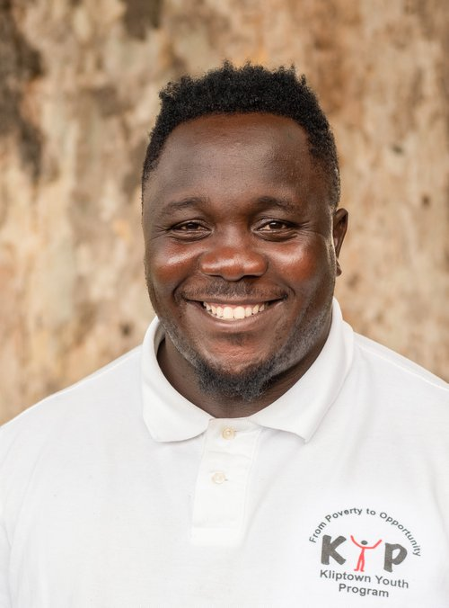

OUR LEADERS
KYP employs a team of 20 young adults, most of whom grew up in Kliptown and understand the challenges faced by our members. We take pride in having a dedicated and enthusiastic staff who view their roles not just as jobs but as opportunities to contribute to and effect positive change in their community. Our organization operates with a relatively flat structure. While individual responsibilities are assigned, major decisions about the organization's future are made collaboratively by the team. Staff development is a crucial aspect of our organization. Ninety percent of our staff members have engaged in professional development, with many completing multiple courses and three earning degrees with KYP’s support. Each member of the management team receives guidance and support from a mentor. A key part of our mission is to prepare young staff members for careers beyond KYP. Several former staff members have moved on to higher-paying jobs, serving as examples of success for current KYP members. We also focus on retaining our core team of key staff who possess the essential skills and knowledge needed for the effective operation of the organization.
Thando Bezana: Operations Manager
tbezana@kliptownyouthprogram.org.za
Thando Bezana was born and raised in Kliptown. He was involved with different programs (SKY/ Mama Africa) before co-founding KYP in 2007. He is a qualified heritage practitioner, a performing artist and an amazing gumboots dancer. Thando holds a diploma in French, DELF/DALF B2, and speaks French, which helps with the organisation's French tours and French related projects. Thando currently serves KYP as the Performing Arts, Sports, and IT Manager.
Thulani Madondo: Executive Director
tmadondo@kliptownyouthprogram.org.za
Thulani Madondo is the co-founder and current Executive Director of the Kliptown Youth Program. Thulani himself was born in a one room shack in Kliptown without electricity or running water, so he understands the challenges facing the youth of Kliptown. Thulani served as a core member of the inaugural City Year South Africa class of 2005, he is a also a Professional Soweto Tourist guide and he participated in other community development organization (SKY) for seven years prior to founding KYP in 2007. In 2012, Thulani was honoured as one of the Top 10 CNN Heroes from a pool of 45,000 nominations coming from 100 countries. His accomplishments also earned him a Humanitarian of the Year Award from Turkey Worldwide Visibility and Feather Awards Role Model of the Year in 2013. In April, 2013, he was named one of the 100 World Class South Africans by City Press, a South Africa publication, and in June, 2013, Thulani was named one of the 200 young South Africans making a difference by the South Africa publication Mail & Guardian. He completed the Strategic Perspective in Nonprofit Management program at the Harvard Business
Christina Scott: Financial Manager
cscott@kliptownyouthprogram.org.za
Christina has served KYP since its inception as a financial manager. She has attended numerous training sessions and completed a computer course at Ipelegeng Community Centre. She also studied Pastel Financial Accounting at College Campus. Christina has been instrumental in helping KYP attain fully audited yearly financial reports and recording KYP’s finances professionally and efficiently
Nelisiwe Walaza: Marketing Manager
nwalaza@kliptownyouthprogram.org.za
Nelly graduated from KYP's tutoring program in 2008. After completing Grade 12 in 2008, she studied Marketing in Business administration at PC Training and Business College for 2 years and graduated in July 2012. In the year 2012 she was chosen as one of the youth to participate in the ILIVE2LEAD women's leadership summit in Nantong, China. She was also the Activist in Residence for Castilleja School in Palo Alto, San-Francisco where she also had the opportunity to visit and work in institutions like Facebook, LinkedIn and Google. In 2016 she pursued a study in Project Management at Wits University. In addition to her role as Marketing Manager, she is also part of KYP's outreach partnership programs, and she is one of the mentors for a girls scholarship program in KZN. Her passion lies in leadership programs and programs that look into developing the youth.
Sipho Dladla: Deputy Director
sdladla@kliptownyouthprogram.org.za
Sipho was one of the founders of KYP and ensures that all program objectives and goals are achieved. He communicates with program managers to complete each program’s administrative duties. He is very competent in IT technical support and is one of the One Laptop Per Child experts. He also acts as one of the main performers and teachers of the Gumboots dance.
Lizzy Makutu: Assistant Marketing & Communications Officer
Lmakutu@kliptownyouthprogram.org.za
Lizzy Makutu is a highly driven, and hardworking young woman who completed her Matriculation in 2011 from Rand Tutorial College. She studied public relations management at the University of South Africa (UNISA). Lizzy enjoys watching Tv series and reading motivational books. She first joined KYP in 2019 as a volunteer in our marketing department. During her time as a volunteer, she demonstrated her ability to create online content and proficiency in written communication. In 2020 she had the opportunity to work with us as an assistant marketing intern where she showcased her skills in PR and marketing. Because we were so impressed with her work ethic and dedication to our cause, we absorbed her as part of our KYP team. She now serves as our Assistant Marketing and Communications Officer.
Basetsana Lokwane: Assistant Financial Manager
blokwane@kliptowwnyouthprogram.org.za
Basetsana was a KYP student and graduated From secondary school in 2007. Her interest in Finance leads her to study a course in Financial Management at Imsimbi Training. She completed a computer course in 2008 at Ipelegeng Community Center. She serves KYP as a Financial Assistant manager and a dance teacher.
Witness Ngobeni: Social Worker
wngobeni@kliptownyouthprogram.org.za
Witness Vumbhoni Ngobeni is a Unisa graduate with a Bachelor of Social Work and is registered with the South African Council for Social Services Professions.She first joined our organization as a volunteer in our Pyschosocial program in 2021. During that time she demonstrated a deep desire to learn and help people.Witness genuinely cared about the well-being of the children and community we serve which made her the perfect candidate for our program. She now serves our organisation as a social worker specialising in Integrated services under child, youth and families.
Lerato Thamae: Primary School Education Program Coordinator
lthamae@kliptownyouthprogram.org.za
Lerato completed her grade 12 at Orlando High School. She has been helping volunteer her time through tutoring and helping learners with their homework in English and Maths. With her generosity, passion and dedication to the children that we work with, she was given the opportunity to be part of KYP's Education Team. Lerato serves the organization as a Primary Education Coordinator.
Andile Mazala: High School Program Coordinator
amazala@kliptownyouthprogram.org.za
Andile has volunteered with KYP since the year 2008. He started with the organization as a soccer player, and then developed passion for the performing arts and working with children teaching them dance and other cultural activities. Andile has travelled to China several times and Reunion Island serving the organization and showing the world our beautiful culture.